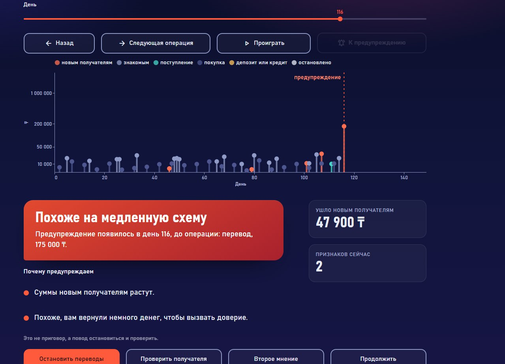
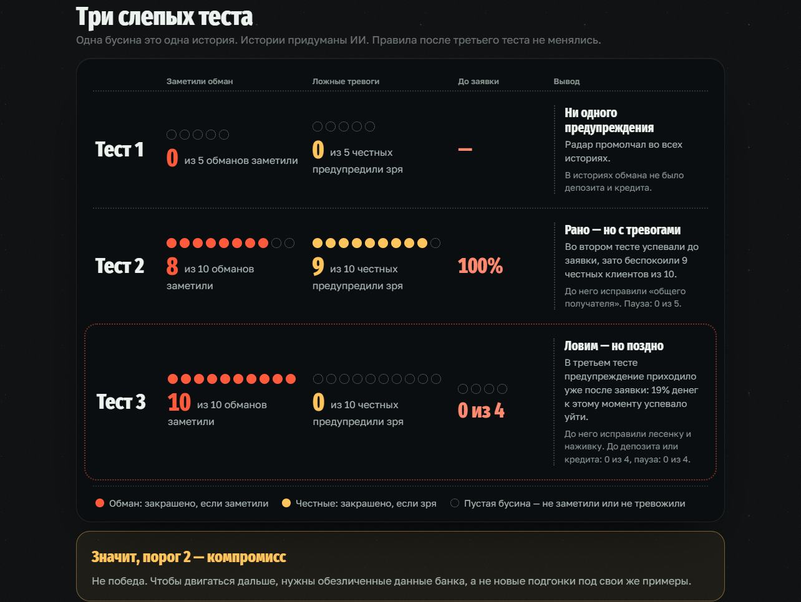

65-күн
«Кеңесші»
Мессенджерде жазып, табыс уәде етіп, азғантайдан бастауды сұрайды.
Оқу прототипі
Клиентті апталап жалған брокерге тартады. Тұмар жекелеген аударымдардың схемаға айналғанын көріп, депозитті жабуға немесе кредит алуға дейін ескертеді.
Жаңа алушыларға сомалар өсіп барады. Сенім тудыру үшін сізге аздап ақша қайтарған сияқты.
Шын мәнінде не болып жатыр
Баяу схема банк көзімен осылай көрінеді. Жеке әрекеттердің ешқайсысы күдікті емес — тек уақыт бойынша аударымдар сомасы.
65-күн
Мессенджерде жазып, табыс уәде етіп, азғантайдан бастауды сұрайды.
75-күн
Экранда «пайда» өседі, бірақ ақша еш жерге салынбаған.
101–107-күн
11 100 → 29 800 ₸ бір алушыға.
Белгі: баспалдақ111-күн
«Аздап шығарып көріңіз» — ақша шынымен бар екеніне сену үшін.
Белгі: жем116-күн
Ал алда — 2 154 900 ₸ депозитті жабу өтінімі.
Белгілер: босату, қосымша төлемКүндер мен сомалар Мейрамбектің демо-тарихынан. Бір аударым ештеңені дәлелдемейді: мән белгілер қосылғанда ғана пайда болады.
Бес белгі
Радар тек өткенді және ағымдағы операцияны қарайды. Ол алдау белгісін білмейді: сигналдарды қосып, санайды.
Жаңа алушыларға сомалар аударым сайын өседі.
Алушы бір рет ақша қайтарды — сақтықты ұйықтату үшін.
Депозитті жабу немесе кредит өтінімі осындай аударымдармен қатар.
Ол жаққа банктің басқа клиенттері де алғаш рет төлейді.
Үлкен аударымнан кейін шығару үшін «салық» сұрайды — кері ештеңе келмейді.
Шешім қалай қабылданады
Бес ереже клиенттің тарихы бойынша тексеріледі. Банк әлдеқашан көріп отырған операциялардан басқа ештеңе қажет емес.
0–1 белгі: үндемейміз. 2 және одан көп: ескертеміз және нені байқағанымызды айтамыз.
Тек депозит немесе кредит өтінімінде, тек клиент қорғау режимін алдын ала қосқан болса, және тек босату белгісі жеммен немесе ортақ алушымен қатар келсе — не 3+ белгі болса.
Ережені өзіңіз тексеріңіз
Радар байқаған белгілерді белгілеңіз. Шешім кодтағы ережемен бірдей қабылданады.
Белгілер жоқ — қарапайым операция, радар үндемейді.
Демо сандармен
Ескерту шыққан 116-күнгі аударым: баспалдақ және жем.
Клиент «Аударымдарды тоқтатуды» басқанға дейін алаяқтарға кетті.
Шоттарда қалды: келесі аударым және депозитті жабу өтінімі.
Қолданбадағы сценарий: Мейрамбек, 116-күн, алушы «Карта ···9963». «Аударымдарды тоқтату» 116-күнгі 175 000 ₸ аударымды, келесі 1 863 000 ₸ аударымды және 2 154 900 ₸ өтінімді ұстап қалады.
Қолданба
Бұл макет емес: скриншоттар жергілікті Streamlit-тен түсірілген. Қолданба бір командамен, желісіз және кілтсіз қосылады.



Тексеру
Шекті мәндер тек A жинағында таңдалды. Соқыр жинақтарда ештеңе таңдалған жоқ — жалған дабылдармен бірге қалай болса солай көрсетеміз.
Бұл тарихтарда депозит те, кредит те болған жоқ. Кідірту іске қосылмады.
«Ортақ алушыны» түзедік. Ескерту өтінімге дейін келді, бірақ адал клиенттерді дерлік әрдайым мазаладық.
Баспалдақ пен жемді түзедік. Бірақ өтінімге дейін — 4-тен 0, ескертуге дейінгі ақша медианасы 19%.
Қалай оқу керек: «алдауды байқады» — ескерту тарих бойы кемінде бір рет шықты; «жалған дабылдар» — адал клиент ескерту алды. «Өтінімге дейін» бөлек саналады және кестеде көрінеді.
| Жинақ | Алдауды байқады | Өтінімге дейін үлгерді | Жалған дабылдар | Кідірту іске қосылды |
|---|---|---|---|---|
| 1-тест | 5-тен 0 | — | 5-тен 0 | 5-тен 0 |
| 2-тест | 10-нан 8 | 100% | 10-нан 9 | 5-тен 0 |
| 3-тест | 10-нан 10 | 4-тен 0 | 10-нан 0 | 4-тен 0 |
Кесте бүйірге жылжиды →
Толық есептер: A жинағы · 1-тест · 2-тест · 3-тест · бастапқы тарихтар мен генератор — репозиторийде.
Шектеулер
Адал тізім әдемі сандардан маңыздырақ: дәл сол не тексеру керегін көрсетеді.
Депозитті ерте жапса, ескерту кеш келеді.
Лицензиясы бар биржа арқылы алдауды көрмейміз.
Адал клиент — құрылысқа төлем, досқа қарыз, криптовалюта саудасы — зардап шеккенге ұқсайды.
Барлық тарих ойдан құрастырылған: бұл логиканы тексеру, банктегі нәтиже емес.
Іске қосу
Қолданба жергілікті қосылады: 160 тарихтан тұратын демо, талдаушы панелі және осы тесттері бар сапа экраны.
$ python -m pip install -r requirements.txt $ streamlit run app.py $ pytest -q # 45 passed
Сегіз слайд: схема, белгілер, логика, соқыр тесттер және шектеулер. Басқару — бағыттауыштар, бос орын немесе тінтуір.